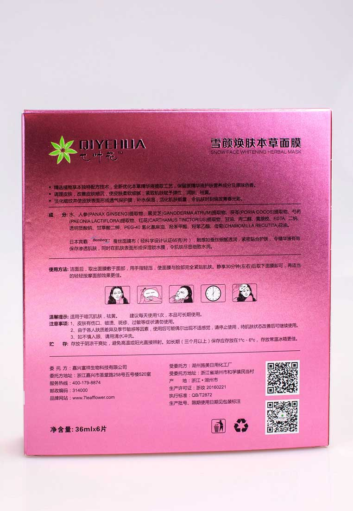
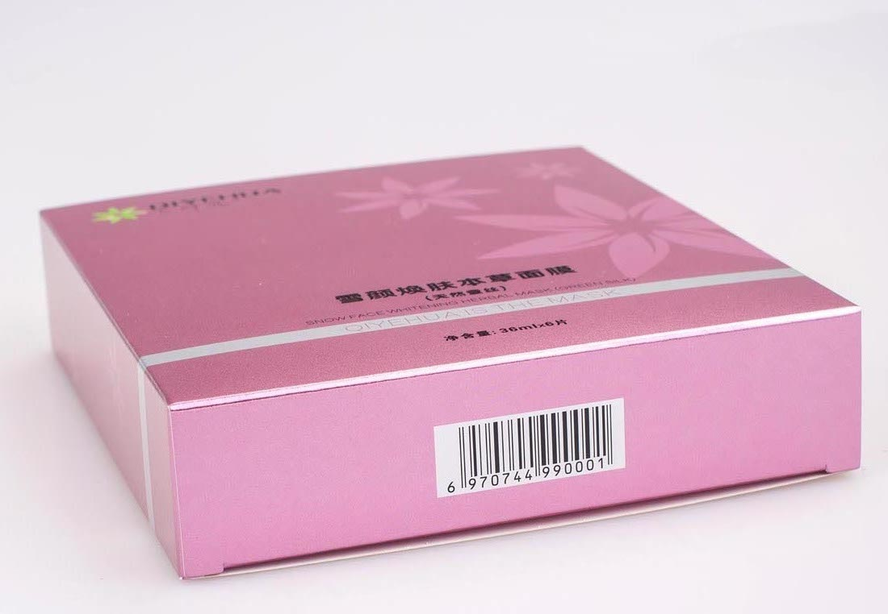

-

-

-

雪颜焕肤本草面膜
价格： ￥258.00/盒
适用于：黄褐斑，色斑，妊娠斑
- 标签 : 黄褐斑 色斑
- 规格 : 36ml*6片
·精选名贵中药材，独特秘方配伍技术，全新优化本草提取精华液先进工艺，保留原精华液护肤营养成分及原味色香。
·调理皮肤、改善皮肤的色素沉积，使皮肤柔软细腻、紧致肌肤赋予弹性，润肤、祛黄、祛斑。
·淡化细纹并使皮肤表面形成透气保护膜，补水保湿，美白，活化肌肤能量，令肌肤时刻焕发青春光彩。
成 分：
·水、人参（PANAX GINSENG）提取物、黑灵芝（GANODERMA ATRUM）提取物、
茯苓（PORIA COCOS）提取物、芍药（PAEONIA LACTIFLORA）提取物、
红花（CARTHAMUS TINCTORIUS）提取物、甘油、丙二醇、黄原胶、EDTA 二钠、透明质
酸钠、甘草酸二钾、PEG-40 氢化蓖麻油、羟苯甲酯、羟苯乙酯、母菊（CHAMOMILLA RECUTITA）
花油
·日本宾霸蚕丝Bemberg面膜布（经科学设计认证65克/片），触感如蚕丝细腻透润，紧密贴合
护肤， 令精华液有效保存渗透肌肤，同时在肌肤表面形成保湿锁水膜，令肌肤尽显细致水润。
使用方法：洁面后，取出面膜敷于面部，用手指轻压，使面膜与脸部完全紧贴肌肤。静享30分钟（左右）后取下面膜即可，再适当的轻轻按摩面部效果更佳。
温馨提示： 适用于黄褐斑，色斑。
建议每天使用1次，本品可长期使用。
注意事项：
1、皮肤有伤口、破溃、斑疹、过敏等症状请勿使用。
2、由于各人肤质差异及季节敏感等因素，使用后可能偶尔出现不适感觉，请停止使用，待肌肤状态改善后可继续使用。
3、如不慎入眼、请用清水冲洗。
贮 存：
存放于阴凉干爽处，避免高温或阳光直接照射。如长期（三个月以上）保存应存放在1ºc－6ºc，
存放常温冰箱更佳。